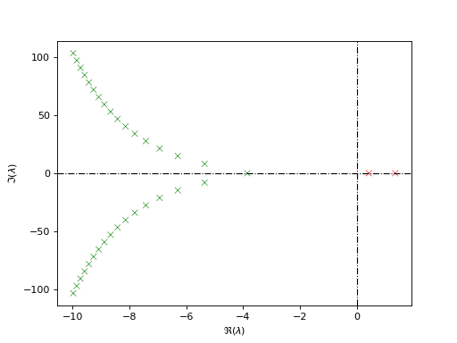
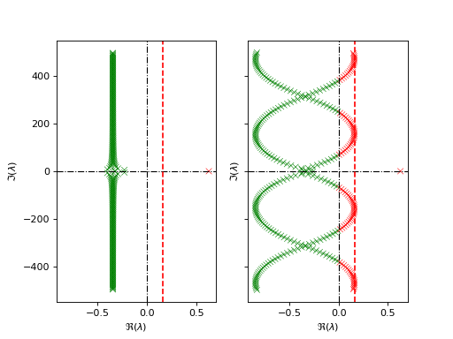

Computing the characteristic roots#
Unlike ordinary differential equations, the spectrum of time-delay systems consists of infinitely many characteristic roots.
To this end, tdcpy provides tools for computing and plotting the characteristic roots.
We distinguish between systems of retarded and neutral type and delay descriptor systems.
Spectrum of a retarded system#
The characteristic equation of the retarded time delay system defined by (1) can be written as
Unlike ODEs, the characteristic function is a quasipolynomial, and therefore there exist infinitely many characteristic roots. However it is known that for retarded systems, there can exist only finitely many roots to a given half plane.
In tdcpy the function tdcpy.roots can be used to compute the characteristic roots of the retarded system.
The user specifies the region of the complex plane in which the roots are to be computed, either by specifying the real part, or alternately the rectangular region of the complex plane.
roots, info = tds.roots(rdde,r=real_part)
# or alternately
roots, info = tds.roots(rdde, r=region)
In the first case real_part specifies the real part of the complex plane to the right of which the roots are to be computed,
whereas in the second case, region is a list of the form [-10, 2, -100, 100], specifying the respective x- and y-limits of the rectangular region in the complex plane.
The roots are returned in the variable roots as a 1D array of complex numbers,
and the variable info contains additional information about the computation, such as the number of roots found, the number of iterations taken, and any warnings or errors encountered during the computation.
Internally, tdcpy first discretizes the system using a spectral method, which yields a finite-dimensional approximation of the system, and computes the eigenvalues of the resulting matrix pencil.
This is followed by a correction step for improving the approximation.
More details on the discretization can be found in the tutorial /auto_examples/tutorials/tutorial01_discretization1 and in the original article [Wu and Michiels, 2012].
Example: Roots of a retarded time-delay system
The characteristic equation of the retarded system rdde defined in Creating TDS Objects reads as:
where \(x(t)\) is the state variable, \(A_0\) and \(A_1\) are constant matrices, and \(h_1\) is the delay.
We can compute the characteristic roots of this system using the code:
roots, info = tdcpy.roots(rdde, r=-10.0)
The variable roots contains the characteristic roots as a 1D array of complex numbers, and the variable info contains additional information about the computation, such as the number of discretization points, any warnings or errors encountered during the computation.
Alternatively, we can specify the rectangular region of the complex plane in which the roots are to be computed as:
roots, info = tdcpy.roots(rdde, r=[-10,2,-100,100])
The roots can be visualized using the eigen_plot function from the tdcpy.plot.eigenvalues module as follows:
import numpy as np
import tdcpy as tds
import matplotlib.pyplot as plt
from tdcpy.plot.eigenvalues import eigen_plot
A0 = np.array([[1, 0], [0, 1]], dtype=float)
A1 = np.array([[0, 1], [0.5, 0]], dtype=float)
delays = np.array([0,0.5])
rdde = tds.RDDE(A = [A0, A1], hA=delays)
roots, info = tds.roots(rdde, r=-10.0)
ax = eigen_plot(roots, title="Characteristic roots of the retarded system")
plt.show()

As can be seen from the plot, the system has infinitely many characteristic roots in the right half of \(r=-10\).
See also
For computation of characteristic roots using the low-level API, we can use tdcpy.stability.characteristic_roots.roots_ddae as follows:
roots, info = tdcpy.stability.characteristic_roots.roots_ddae(E, A, hA, r=-10.0)
where E=I for a retarded system, and A and hA are the matrices and delays of the respective delay-differential algebraic equation (DDAE) representation of the rdde.
More often, for evaluating the stability of a system, it is required to compute the spectral abscissa, which is defined as
for which the function tdcpy.spectral_abscissa can be used as follows:
alpha = tds.spectral_abscissa(rdde)
For the system to be stable, the spectral abscissa must be strictly negative, which is equivalent to all characteristic roots being in the left half plane.
Finally, if the user wishes to incorporate the rightmost root computation within a subfunction, the low-level API tdcpy.stability.characteristic_roots.rightmost_root can be called instead using:
Often, the user may wish to perform root computations within a subfunction, for example
within an optimization routine. In such cases, the low-level API tdcpy.stability.characteristic_roots.rightmost_root comes in handy.
The rightmost root \(\lambda^*\) and the related information can be obtained by calling the function as follows:
from tdcpy.stability.characteristic_roots import rightmost_root
root_star, root_info = rightmost_root(E, A, hA, r=real_part)
where root_star is the rightmost root found and root_info is a tuple containing the following:
M: Characteristic matrix evaluated at \(\lambda^*\)DM: Derivative of the characteristic matrix with respect to \(\lambda\) evaluated at \(\lambda^*\)u: Left eigenvector of the characteristic matrix corresponding to \(\lambda^*\)v: Right eigenvector of the characteristic matrix corresponding to \(\lambda^*\)root_star_found: Boolean indicating whether the rightmost root was foundcr_info.max_size_evp_enforced: Maximum size of the eigenvalue problem enforced during computation.
The above information is essential for computing the gradients of the spectral abscissa with respect to the system parameters, used extensively for gradient computation with respect to system parameters in stabilization routines.
Summary
Command |
Description |
|---|---|
|
Compute the characteristic roots of a retarded system |
|
Compute the spectral abscissa of a retarded system |
|
Plot the characteristic roots in the complex plane |
|
Compute the characteristic roots using the low-level API |
|
Compute the rightmost root using the low-level API |
Spectrum of a neutral system#
The characteristic equation of a neutral time delay system defined by (2) can be written as
Unlike retarded systems, neutral systems can have infinitely many characteristic roots in any right half plane, and the stability of the system is determined by the location of the roots of the associated delay-difference equation (ADDE) (3) as well as the roots of the characteristic equation (3).
In case of neutral systems, the spectrum is extremely sensitive to inifinitesimal perturbations and therefore a small change in the delays can lead to a significant shift in the spectrum. The notion of strong stability therefore applies to neutral systems, which requires that the strong spectral abscissa of the associated ADDE is strictly negative in addition to the requirement of the spectral abscissa of the closed-loop being strictly negative.
The strong spectral abscissa is defined as the supremum of the real part of the roots of the ADDE that is insensitive to small delay perturbations
and can be computed using the function tdcpy.strong_spectral_abscissa as follows:
strong_alpha = tds.strong_spectral_abscissa(rdde)
The below example demonstrates the computation of the spectral abscissa and the strong spectral abscissa for a neutral time-delay system.
Example: Spectral abscissa and strong spectral abscissa of a neutral system
Consider the neutral time-delay system described by:
We can compute the spectral abscissa and the strong spectral abscissa of this system using the code:
import numpy as np
import tdcpy as tds
A0 = np.array([[0.25]])
A1 = np.array([[0.75]])
hA = np.array([0.,2.])
H1 = np.array([[-0.75]])
H2 = np.array([[0.5]])
hH = np.array([1.,2.])
ndde = tds.NDDE(H = [H1,H2], hH = hH, A = [A0, A1], hA=hA)
alpha = tds.spectral_abscissa(ndde)
CD = tds.strong_spectral_abscissa(ndde)
In this case, the spectral abscissa is equal to the strong spectral abscissa.
To obtain the strong spectral abscissa of the associated ADDE, we can use the function spectral_abscissa_diff as follows:
diff = ndde.get_delay_difference_equation()
sa_diff,_ = tds.spectral_abscissa_diff(diff)
The corresponding low-level API is spectral_abscissa_diff from the tdcpy.stability.spectral_abscissa module, which can be called using sa_diff, info = spectral_abscissa_diff(H, hH, r=-1.0).
For the roots of the characteristic equation, we can use the function roots similar to the retarded case.
import matplotlib.pyplot as plt
from tdcpy.plot.eigenvalues import eigen_plot
roots, info = tds.roots(ndde, r=[-5,2,-500,500])
ax = eigen_plot(roots, title="Characteristic roots of a neutral system")
plt.show()

Summary
Command |
Description |
|---|---|
|
Extract the delay-difference equation of a neutral system |
|
Compute the spectral abscissa of the associated delay-difference equation |
|
Compute the rightmost root using the low-level API |
Spectrum of a DDAE#
The characteristic equation of a DDAE defined by (4) reads as
Like for DDAEs, the spectrum consists of roots of the DDE as well as the roots of the ADDE if the system is neutral. At first, we check if the system is retarded or neutral using
is_retarded = tds.is_essentially_retarded(ddae)
# or
is_neutral = tds.is_essentially_neutral(ddae)
The software internally extracts the delay-difference equation and checks if the delay-difference equation has dependency on the delays. If yes, then the system is deemed neutral, otherwise it is retarded.
Since DDAEs encompass both retarded and neutral systems, the notion of strong stability and the related definitions also extend to DDAEs. The below example demonstrates the computation of the spectral abscissa and the strong spectral abscissa for a DDAE.
Example: Spectral abscissa and strong spectral abscissa of a DDAE
Consider the following delay descriptor system with two delays:
where
We can create the respective DDAE object using the code:
import numpy as np
import tdcpy as tds
E = np.array([[1, 0], [0, 0]], dtype=float)
A0 = np.array([[0.25, 0], [0, 1]], dtype=float)
A1 = np.array([[0.75, 0], [0, -1.5]], dtype=float)
A2 = np.array([[0, 0], [0, 3]], dtype=float)
hA = np.array([0.,1.,2.])
ddae = tds.DDAE(E=E, A=[A0, A1, A2], hA=hA)
Now let us check if the system is retarded or neutral
is_retarded = tds.is_essentially_retarded(ddae)
is_neutral = tds.is_essentially_neutral(ddae)
We can compute the spectral abscissa and the strong spectral abscissa of this system as
alpha = tds.spectral_abscissa(ddae)
CD = tds.strong_spectral_abscissa(ddae)
Summary
Command |
Description |
|---|---|
|
Check if a DDAE is essentially retarded |
|
Check if a DDAE is essentially neutral |
|
Extract the delay-difference equation of the DDAE |
|
Compute the spectral abscissa of the associated delay-difference equation |